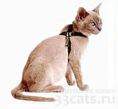
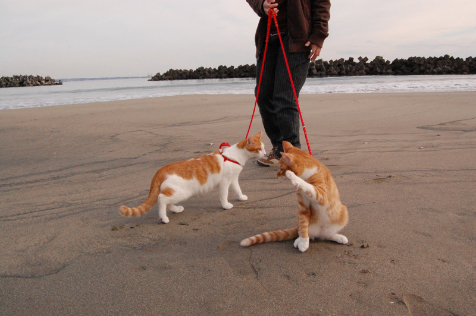

В природе кошка всегда гуляет свободно, охотится и защищает свою территорию. Но в условиях города подобные прогулки чреваты неприятностями: осколки стекол, машины, собаки, потравленные крысы и голуби – всех опасностей не перечесть. Но кошке необходима физическая активность, поэтому тема выгула вызывает столько споров среди владельцев. Свободный выгул, когда кошка «ходит где вздумается и гуляет сама по себе» без присмотра хозяина, практикуется в деревнях, а также на дачах, куда городские животные вывозятся на лето. Такие прогулки в городе – это, к сожалению, безответственность владельца, которая часто приводит к плачевным последствиям. Племенных кошек свободно выгуливать чаще всего запрещено правилами клуба. Прежде чем выпустить животное на прогулку, убедитесь, что все прививки своевременно сделаны. Если есть опасность подцепить клеща – обработайте шерсть соответствующим средством. Клещи переносят пироплазмоз, от которого каждый год погибает много кошек и собак, – обезопасьте свое животное, регулярно осматривайте шерсть питомца. Домашней кошке прогулка не заменит охотничьих походов, но может стать хорошим средством от скуки, ведь кошки так любопытны. Кошек выгуливают на поводке и специальной шлейке, ошейник для этого не подходит, поскольку мышцы шеи у кошки намного слабее, чем у собаки. Из правильно подобранной шлейки (между шлейкой и телом свободно входят два пальца) кошка не сможет выскочить. В качестве поводка можно также использовать рулетки для мелких собак. Молодая кошка быстро привыкнет к этой амуниции, а вот со взрослой – придется потрудиться. Навык хождения на поводке пригодится не только для прогулок, но и для поездок, в частности, к ветеринару, поэтому приучить к шлейке стоит любую кошку. Приучить кошку к поводку, шлейке советует приучать кошку к поводку в несколько этапов: сначала животное привыкает к новому предмету – оставьте шлейку вблизи любимых мест кошки. Затем пробуют надеть шлейку, отвлекая внимания кошки на ласки, игры, лакомства, снимать – обязательно только когда кошка успокоилась. Надевайте амуницию время от времени, привязывая эти моменты к чему-то приятному (например, перед кормлением), постепенно увеличивая длительность. Когда кошка привыкнет к шлейке, можно добавить поводок и пройтись по комнате. Кошку нельзя тянуть – она просто ляжет и никуда не пойдет, поэтому будьте готовы к тому, что выгуливать будут вас. Наконец, можно отправиться на настоящую прогулку: выберите спокойное и малолюдное место, чтобы кошка не испугалась новой обстановки, принесите животное в переноске с пристегнутой шлейкой. Поставьте контейнер и предоставьте животному выйти самостоятельно. Некоторые владельцы предпочитают выгуливать кошку на балконе. Это очень опасно, ведь кошка, увлекшись увиденным на улице, частенько прыгает вниз. И хотя она умеет падать и приземляться на лапы, высота в несколько этажей часто оказывается смертельной. Иногда запрет на выгул на незастекленном балконе даже прописывается в договоре купли-продажи кошки.
 